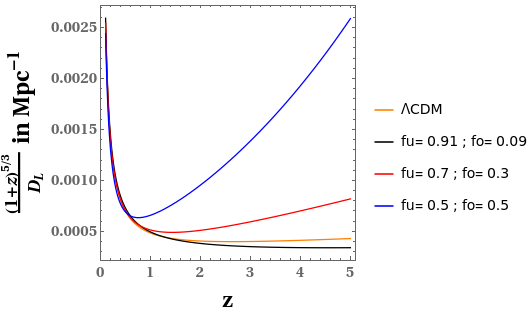
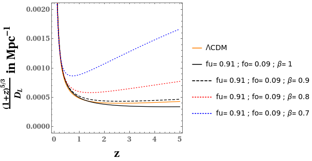

Gravitational Waves in an Inhomogeneous Universe
Space is quite inhomogeneous at small scales. These inhomogeneities may play a significant role in governing the physical phenomena at this scale. Here we have analysed the impact of these inhomogeneities on the Gravitational Wave (GW) observables. For this analysis we have made use of a toy model of the inhomogeneous spacetime. Our analysis shows that the amplitude of GW gets affected by these inhomogeneities and this effect is governed by our model parameters.
Introduction
The Cosmological Principle states that the Universe is homogeneous and isotropic at large scales. Various surveys like Sloan Digital Sky Survey have revealed deviations from homogeneity on samples as large as 500 h-1 Mpc. In comparison, Milky Way galaxy is about 30 kpc across. These inhomogeneities play an important role in governing the physical phenomena at this scale. The physical phenomena that we have considered here is the propagation of Gravitational Waves (GWs).
GWs have been a fascinating feature of Physics ever since Einstein predicted their existence. GWs are ripples in spacetime produced when the acceleration of the second mass moment of the associated motion of a system of masses is non-vanishing. This is valid provided higher order moments are neglected. In TT (transverse traceless) gauge this second mass moment is given by the quadrupole moment. These waves move outwards from their source. Before reaching the observer these waves propagate through the spacetime. In this work, we have analysed how the amplitude of these GWs gets affected by the inhomogeneities present in spacetime.
Formalism
To study an inhomogeneous spacetime, a suitable averaging procedure is required. In this work, we have used Buchert’s averaging procedure proposed by Thomas Buchert. Buchert’s approach was to first decompose Einstein’s equation into a set of dynamical equations for scalar quantities using Raychaudhuri equation and then average those scalar quantities. Raychaudhuri equation is concerned with the kinematics of flow. Using Einstein’s equation and Raychaudhuri equation ensures that the procedure is GR compliant.
For our analysis we have used a toy model based on Buchert’s averaging procedure. This toy model presents a simplified picture of the inhomogeneous spacetime where a domain of space has been divided into two types of regions - one overdense region and one underdense region. Here, overdense region is a closed, dust only Friedmann–Lemaître–Robertson–Walker (FLRW) region while the underdense region is an empty FLRW region. The physical interpretation of this toy model is that the domain of space of our toy model represents the spacetime through which GW is propagating. The overdense region is the matter filled region that the GW encounters in its path while the underdense region is the region of cosmic void.
There are two parameters governing our model; fu,the volume fraction of the underdense region and β, the factor governing the time evolution of the scale factor for the underdense region. For the overdense region, there is also fo, the volume fraction of the overdense region, which is related to fu by the relation: fu + fo = 1. These parameters completely determine our toy model. The intervening region between source and observer through which GWs propagate can have any combination of this (fo,fu). Therefore we have used different combinations of (fo,fu) for our analysis. Using Buchert’s averaging procedure and this toy model, we can calculate various averaged scalar quantities for the domain under analysis, like averaged density, averaged Hubble parameter, etc.
Our toy model is a theoretical model. In order to check the validity of our analysis, we need to relate the quantities calculated using our toy model with observational quantities. This is where Covariant Scheme comes to our rescue. It relates the theoretically calculated quantities from our toy model, averaged density of the domain and averaged Hubble parameter of the domain, with angular diameter distance DA, an observational quantity.
Results
The redshift-dependent part of GW amplitude is given by, \[A = {(1+z)^{5/3} \over D_L},\] where z is the redshift factor and \(D_L\) is the luminosity distance which is related to angular diameter distance by the relation, \(D_L = (1+z)^2 D_A.\)
We have plotted this quantity A for different combinations of our model parameter in Figure 1 & Figure 2 and we have related these plots with the homogeneous ΛCDM plot as well. Figure 1 shows that for a certain combination of our model parameters, the plot for our inhomogeneous toy model is very close to the plot of homogeneous ΛCDM model. As we vary our model parameters from this particular combination, the plot for our toy model starts deviating from the plot of the ΛCDM model and this deviation increases as we vary our model parameters more and more from that particular combination.

Figure 1: Plot of the redshift dependent part of the gravitational wave amplitude w.r.t. redshift z, for the ΛCDM model and for our model for various combinations of the volume fractions fo and fu, with β = 1. Credits: Shashank S. Pandey et al., 2022.

Figure 2: Plot of redshift dependent part of the gravitational wave amplitude w.r.t. redshift z, for the ΛCDM model and for our model for different values of the parameter β, for the combination of fractions fu = 0.91 and fo = 0.09. Credits: Shashank S. Pandey et al., 2022.
Figure 2 shows that for only one particular combination of (fo,fu) and β, the plot for our toy model is very close to the homogeneous ΛCDM plot. For all other combinations of (fo,fu) and β, there is substantial deviation from the homogeneous ΛCDM case. This shows that inhomogeneities in spacetime play an important role in the propagation of GWs and therefore should not be ignored.
Conclusions
Our study shows that the inhomogeneities present in the spacetime have substantial effect on the observables of GWs traversing through this spacetime. Our present analysis should inspire further studies of the effect of inhomogeneous spacetime on various other physical phenomena.
Original paper: Effect of inhomogeneities on the propagation of gravitational waves from binaries of compact objects
First Author: Shashank Shekhar Pandey
Co-authors: Arnab Sarkar, Amna Ali and A.S. Majumdar
First author’s Institution: Department of Astrophysics and Cosmology, S. N. Bose National Centre for Basic Sciences,JD Block, Sector III, Salt lake city, Kolkata-700106, India
Related articles
- SARAS 3 telescope refutes astrophysical origins of the claimed cosmic dawn signal
- Mass of the Black Hole in the nearby AGN: Mrk 590
- Shedding Light on the Cosmic Web with Fast Radio Bursts
- Futuristic gravitational wave observations to resolve dichotomy of compact objects